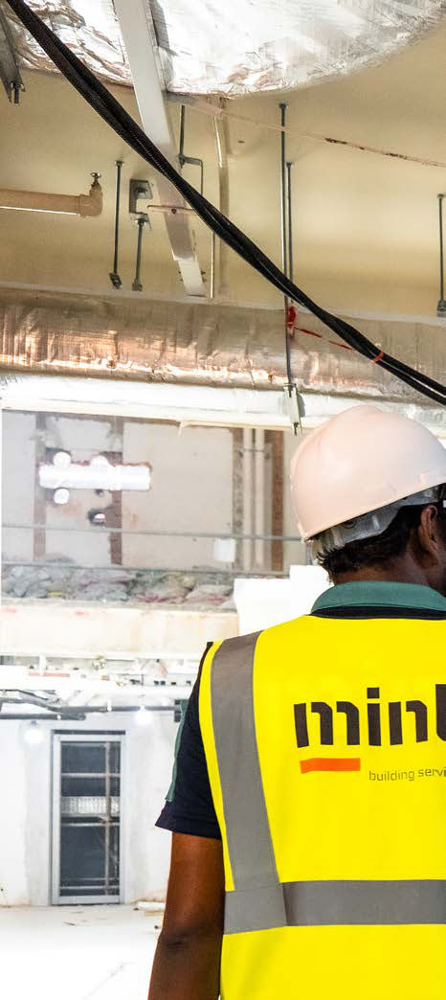

Working within historic buildings brings challenges that extend beyond design and delivery. Structures built decades ago, and in some cases more than a century ago, were never intended to accommodate modern loading, services density or contemporary construction methodologies. Hidden structural weaknesses, material degradation and undocumented alterations are common, making early surveys, intrusive investigations and careful sequencing essential.
There is also an elevated risk of hazardous materials, particularly asbestos, which was widely used in building construction well into the late twentieth century. In conservation projects, asbestos may be concealed within ceiling voids, service risers, floor finishes or fireproofing systems, requiring specialist surveys, controlled removal and strict compliance with safety regulations.
